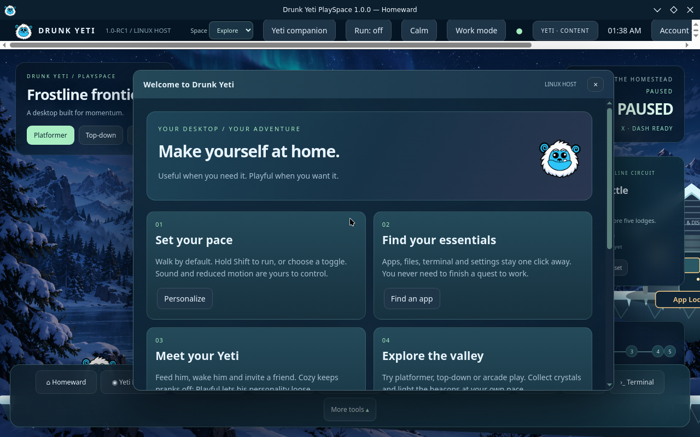

Keep your tools close
PlaySpace brings apps, files, terminal access, and desktop shortcuts into its own interface. Ordinary desktop work does not require completing a game.

A desktop with a little adventure
A useful Linux desktop with an optional game world, a Yeti companion, and a place to make yourself at home.
Free preview · External download · Two ISO parts + assembly script
Work first. Explore when you want.
PlaySpace brings apps, files, terminal access, and desktop shortcuts into its own interface. Ordinary desktop work does not require completing a game.
Optional exploration and a snowy alpine world give your desktop a different pace. Switch between work and play on your terms.
Meet the Yeti companion and the PlaySpace welcome experience. Companion behavior and app integrations are still being developed.
Actual ISO boot capture
The rebuilt image boots into PlaySpace rather than the Plasma desktop. The normal BIOS VM test reached the screen below ten minutes after boot.

Get the live image
.part01 and .part02 files, plus Assemble-ISO.command.bash Assemble-ISO.commandWindows: follow the Command Prompt assembly steps in READ-ME.txt on the release page. The individual parts are not bootable.
Before you begin
The ISO compiled successfully and reached PlaySpace in a BIOS VM. UEFI, Secure Boot, physical hardware, online account flows, and full application acceptance remain pending. The boot menu still uses Debian artwork.
This is an x86_64 image. Use x86_64 emulation in UTM, rather than ARM virtualization. Performance on a Mac has not been measured.
No. This upload is a download landing page for a Linux live ISO. The operating system is a development preview, with some creative-app launchers and companion integrations still unfinished.
Verify your download
The assembly script checks the image automatically. You can also compare the assembled ISO’s SHA-256 with this value and the release’s SHA256SUMS file.
ca7935534d004c8b35228606eba36c75621d3ced5f1da2b34c21623dfb8f0f04Get the public preview, screenshots, checksums, and setup instructions.